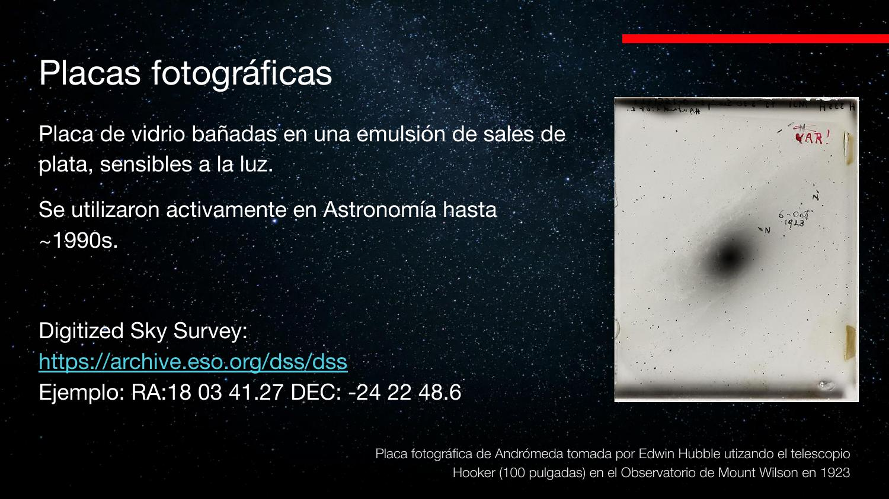
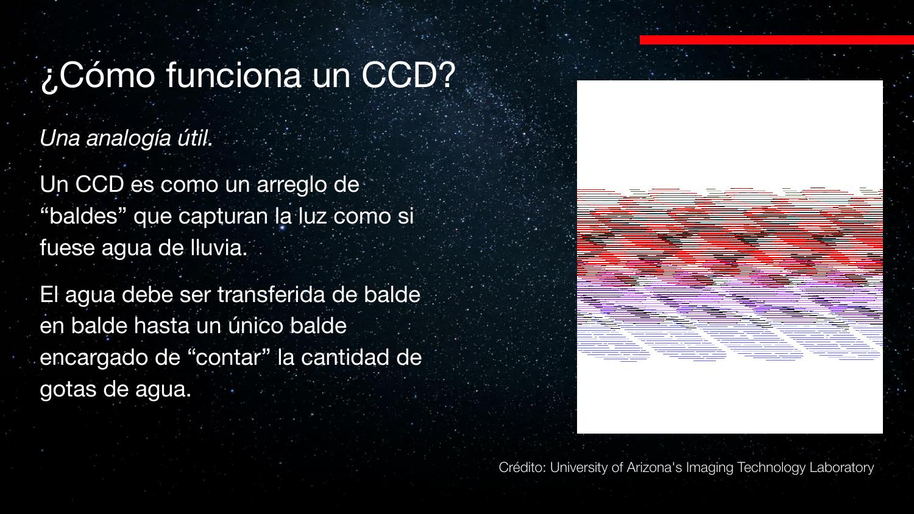
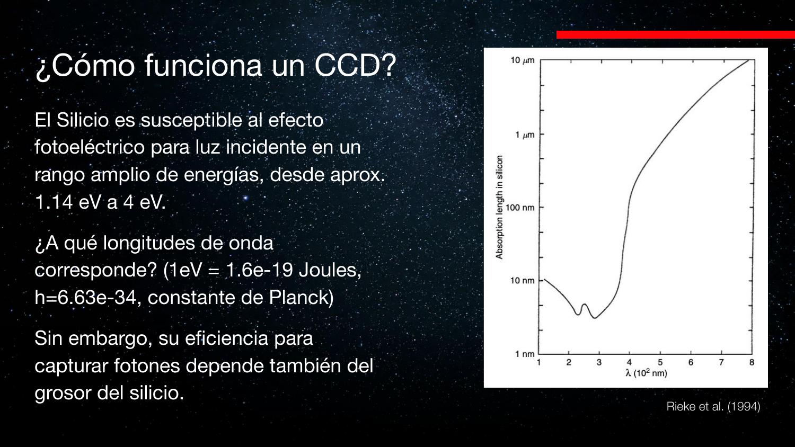
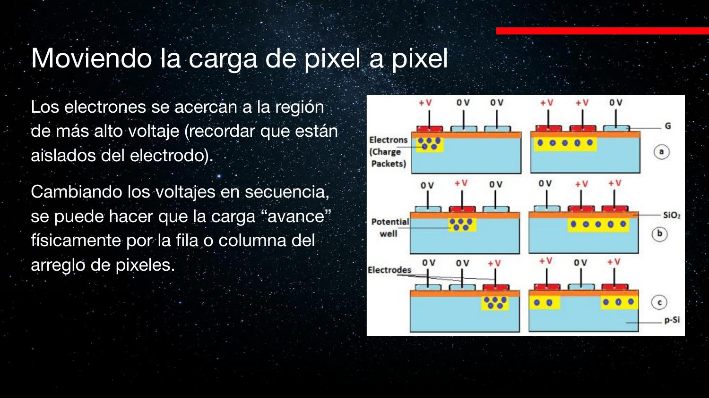
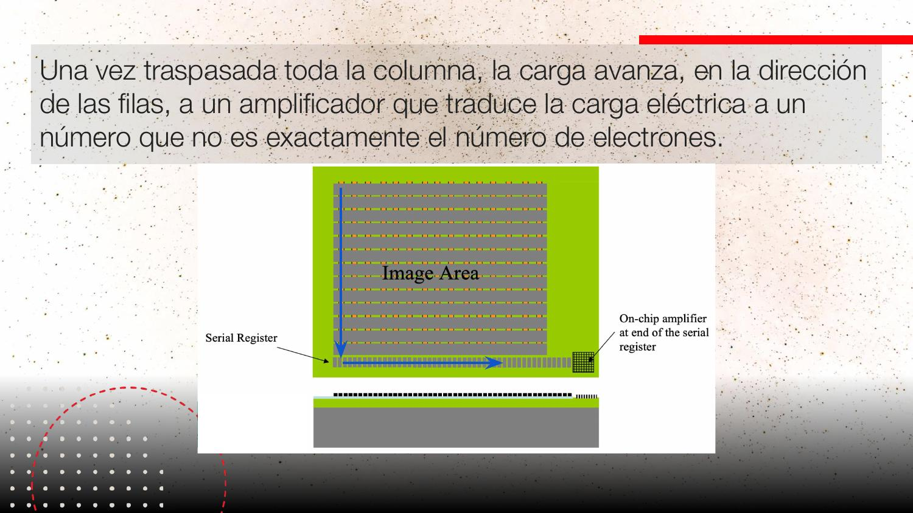
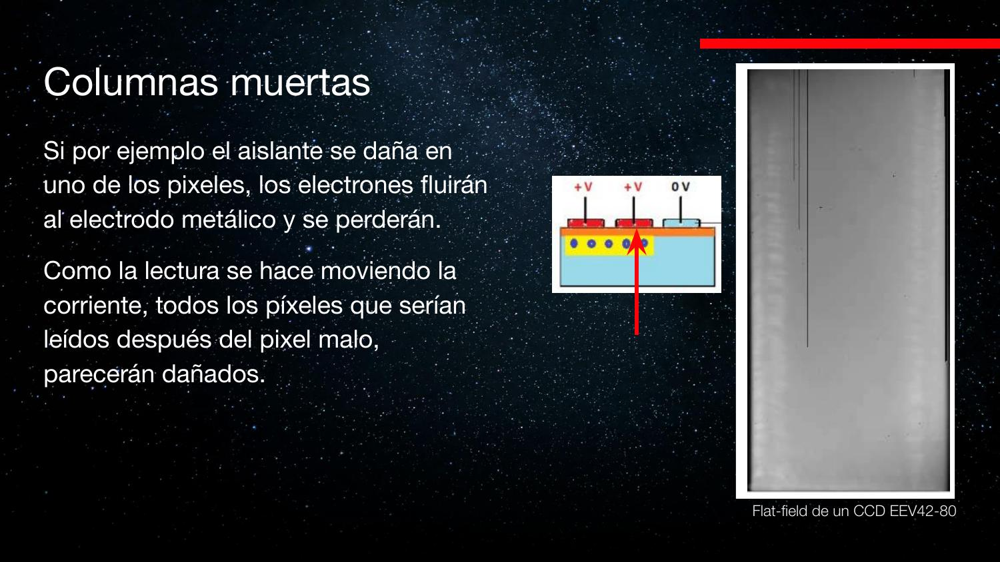
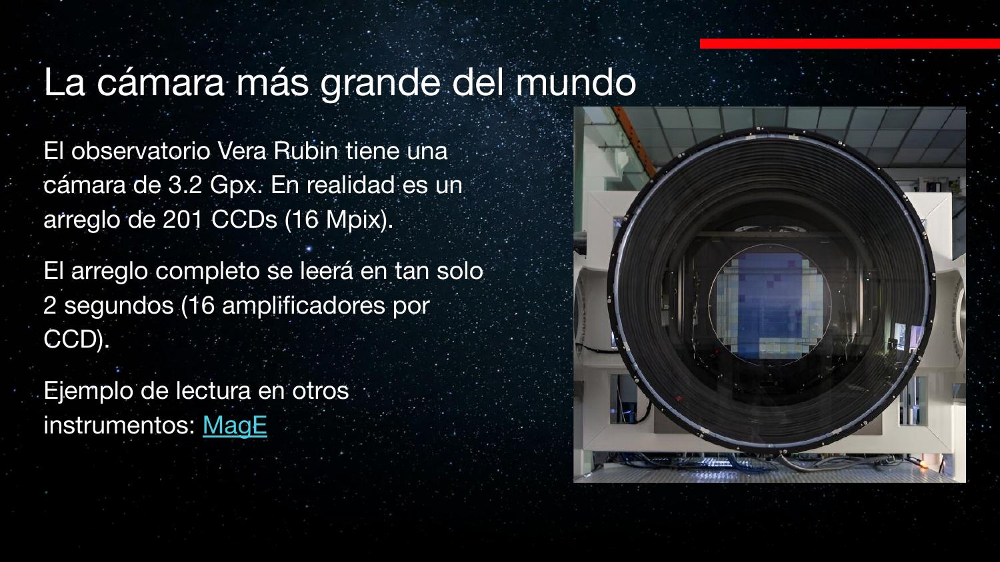

Detectores: del fotón al número
Placas fotográficas, efecto fotoeléctrico y CCDs: cómo la luz concentrada por el telescopio se convierte en una matriz de números — con todos sus detalles sucios: overscan, columnas muertas, rayos cósmicos, saturación y la carrera por leer más rápido.
La clase 1 terminaba donde la luz queda concentrada en el foco. Hoy entramos al final del pipeline: el detector, el componente que transforma fotones en información digital. Es la parte más «informática» del curso: píxeles, bits, rango dinámico, ruido de lectura y archivos FITS.
Placas fotográficas: el detector de un siglo
Vidrio + emulsión de sales de plata: donde llega luz, se oscurece. Se usaron activamente hasta ~1990.
Después del ojo, el primer detector registrable fue la placa fotográfica: una placa de vidrio bañada en una emulsión de sales de plata que se oscurece proporcionalmente (hasta cierto punto) a la luz recibida. Con placas se hizo ciencia mayúscula:
- La placa de Hubble con la estrella variable de Andrómeda (marcada «VAR!») — la observación que, vía la relación período-luminosidad de las Cefeidas, dio las primeras distancias extragalácticas.
- La Carte du Ciel: el primer atlas fotográfico de todo el cielo; el Observatorio Nacional en Cerro Calán cubría parte del hemisferio sur.
- El survey Calán/Tololo (fines de los 80 – 90, Mario Hamuy y José Maza): placas tomadas en Tololo viajaban en bus a Santiago, donde máquinas blinker alternaban dos placas de la misma zona del cielo para detectar supernovas «parpadeando» — la calibración de supernovas tipo Ia que después fue esencial para descubrir la expansión acelerada del universo.
Las placas siguen siendo útiles: son observaciones de hace 50–100 años, ideales para medir movimientos propios comparando con imágenes actuales. Hoy se digitalizan (proyecto del profesor René Méndez en Calán), y el Digitized Sky Survey permite pedir online la imagen de cualquier coordenada del cielo.

Limitaciones
Las placas saturan rápido: un objeto brillante se ve negro, y no hay «niveles de negro» — medir luminosidades totales (fotometría) es difícil. Sirven para posiciones y variabilidad; para brillos precisos hacía falta otra cosa.
El efecto fotoeléctrico
Luz que golpea un material y libera electrones. La energía del electrón depende de la frecuencia, no de la intensidad: Nobel para Einstein.
Si se ilumina un material (típicamente un metal), se liberan electrones. El hallazgo clave: aumentar la intensidad no aumenta la energía de cada electrón liberado — solo la frecuencia de la luz lo hace. Cómo se mide: los electrones deben remontar un voltaje de frenado; solo generan corriente si su energía supera esa barrera.
Esto demuestra el comportamiento corpuscular de la luz: la interacción es fotón-a-electrón, no una acumulación gradual de energía de onda. Fue uno de los tres artículos revolucionarios de Einstein de 1905 y el motivo (oficial) de su Nobel. El mismo efecto opera en los paneles fotovoltaicos… y en los CCD.

Es un umbral por evento, no por potencia acumulada: como un comparador digital. Señal analógica (flujo de fotones) → eventos discretos (fotoelectrones) → conteo. El CCD es, en el fondo, un contador de eventos con memoria analógica.
El CCD: una grilla de baldes bajo la lluvia
Charge-Coupled Device: el detector estándar de la astronomía desde los 90 (otro Nobel, 2009).
La analogía canónica: un CCD es un arreglo de baldes bajo la lluvia. Los fotones (gotas) caen y cada balde (píxel) acumula los fotoelectrones que se generan en él. Al terminar la exposición, el agua de cada balde debe transportarse, balde a balde, hasta un único medidor que la cuantifica: el amplificador.

- Un CCD típico de instrumento astronómico: 2048 × 1024 píxeles, cada píxel de 10–20 µm.
- No se usa un metal sino semiconductores (silicio): el fotón incidente libera un fotoelectrón dentro del material.
- Los celulares y cámaras actuales usan la tecnología prima CMOS (un amplificador por píxel, §11) — misma física, arquitectura de lectura distinta.
Silicio y longitud de onda: el largo de absorción
Cada λ penetra una profundidad característica en el silicio. El grosor del material define qué fotones se detectan.
El silicio responde al efecto fotoeléctrico para fotones de aproximadamente 1,14 eV a 4 eV. Pero además, el largo de absorción depende fuertemente de λ: un fotón de 300 nm penetra ~5 nm; uno de 600 nm, ~1 µm. Si la capa de silicio es más delgada que el largo de absorción, el fotón la atraviesa sin ser detectado: el grosor del chip define la sensibilidad roja del detector.
El cálculo hecho en clase, con \(E = hc/\lambda\):

Eficiencia cuántica: CCD 90, ojo 1
No todo fotón produce un electrón. La fracción detectada es la eficiencia cuántica (QE).
La captura es probabilística (mecánica cuántica): la eficiencia cuántica mide qué fracción de los fotones incidentes produce un fotoelectrón detectado.
- CCD: hasta ~90% en el óptico — 9 de cada 10 fotones cuentan.
- Ojo humano: ~1% en su máximo (cerca del peak solar) — y cae hacia el azul y el rojo.
- Placas fotográficas: comparables al ojo en eficiencia, aunque con mayor cobertura espectral.
Ese factor ~90 en eficiencia es una revolución equivalente a agrandar el telescopio ~9,5 veces en diámetro, gratis.

Atrapar y mover la carga
Voltajes que forman pozos de potencial, y una coreografía de voltajes que hace caminar los electrones.
El pozo de potencial
Dentro de cada píxel, el fotoelectrón queda libre en el silicio. Para retenerlo: capas aislantes impiden que escape hacia los lados y hacia los electrodos, y tres electrodos metálicos por píxel aplican voltajes. Con voltaje positivo al centro y negativo a los lados, los electrones (carga negativa) se acumulan bajo el electrodo positivo: un pozo de potencial — el «balde» real, que es una capacitancia.

La marcha de las cargas
Para leer, se cambian los voltajes en secuencia: se da voltaje positivo al electrodo vecino (la nube de carga se «desparrama» hacia él), luego se apaga el original (la nube queda un paso más allá). Repetido, el paquete de carga camina físicamente píxel a píxel hacia abajo por la columna — y los paquetes del píxel de arriba van entrando detrás, como los baldes de la analogía.

Es un registro de desplazamiento analógico (shift register): la imagen se serializa columna a columna, fila a fila, hacia un único conversor. La consecuencia arquitectónica es directa: la lectura es secuencial y su tiempo escala con el número de píxeles por amplificador — el cuello de botella que motiva mosaicos y CMOS (§11).
El amplificador: bits y rango dinámico
Al final de la última fila, la carga se convierte en un número. Cuántos bits usar define cuánta información cabe.
Al pie del arreglo hay una fila especial de lectura: las cargas que llegan ahí se mueven lateralmente hasta el amplificador, que convierte cada paquete de carga en un número entero (que no es exactamente el número de electrones: hay una ganancia de por medio).
- Con n bits se representan valores de 0 a 2n−1: 8 bits → 255; 16 bits → 65 535; los CCD científicos usan 16 o más.
- Una imagen JPG usa 0–255 por canal porque los monitores no muestran más niveles. Pero en astronomía una misma imagen puede contener un cuásar brillante y una nebulosa difusa: cortar en 255 niveles destruiría información. Más bits = más rango dinámico.
- Si llega más carga que el máximo representable, el número se clava en 2n−1: saturación. En el flat muy azul mostrado en clase, una zona entera marcaba exactamente 65 535 = 2¹⁶−1.

Las cámaras fotográficas «logarítmicas» comprimen la escala antes de digitalizar para abarcar escenas de alto contraste (la selfie a contraluz). Mismo problema, otra solución: en astronomía se prefiere respuesta lineal y muchos bits, porque el objetivo es medir, no solo mostrar.
Overscan y corriente oscura
El CCD genera carga incluso sin luz. Para restarla, se leen píxeles que no existen.
El silicio produce electrones «fantasma» por agitación térmica (corriente oscura). Por eso los detectores se enfrían con nitrógeno líquido — menos temperatura, menos carga espuria. Pero algo queda, y hay que medirlo para restarlo.
La técnica del overscan: después de desplazar las 2048 columnas reales, se sigue leyendo «de más», como si hubiera más píxeles. Esos valores no vieron luz jamás: miden la carga de base del sistema. Por eso la imagen FITS resultante es más grande que el chip (en el ejemplo de clase: 2176×1152 leídos vs 2048×1024 físicos), y en la región de overscan los valores caían de ~10 500 a ~1380 — no a cero.

FITS: datos + metadatos
El formato estándar de la astronomía: la matriz de píxeles y el header que describe la observación.
Lo que entrega el telescopio son archivos FITS. A diferencia de un JPG, cada píxel guarda el valor completo del amplificador (según BITPIX, ej. 16 bits), y el archivo incluye un header con metadatos: objeto, coordenadas, tiempo de exposición, dimensiones (NAXIS), configuración del instrumento.
En clase se exploró con DS9 (el visor estándar) una imagen real del espectrógrafo echelle MagE (Las Campanas): las franjas son órdenes del espectro, cada una un rango distinto de longitud de onda; los cortes transversales mostraron datos → overscan → nada; y el header reveló BITPIX=16 y los ejes con overscan incluido.
FITS es el ejemplo perfecto de datos autodescriptivos: payload binario + diccionario clave-valor, de 1981 y aún universal. La lección de diseño: en ciencia, el dato sin su contexto de adquisición no sirve; el header es parte del dato.
Defectos: columnas muertas y rayos cósmicos
Un píxel dañado mata su columna entera; el espacio bombardea el detector. La defensa: repetir y promediar.
Columnas muertas
Si el aislante de un píxel se daña, los electrones fugan al electrodo y se pierden. Como la lectura mueve toda la columna a través de ese píxel, todos los píxeles aguas arriba se pierden también: un píxel malo = una columna muerta. En 2 millones de píxeles, la probabilidad de tener varios es alta.

Rayos cósmicos
Partículas cargadas del espacio ionizan el silicio y dejan señales idénticas a la luz, en grupos de píxeles y con miles de electrones. Llegan a razón de ~2 por cm² por minuto (también a tu cuerpo, ahora mismo). En una exposición de ~30 minutos — el máximo práctico recomendado — caen varios sobre el chip; con suerte no encima de tu línea de emisión.

La defensa estadística: dithering y apilado
Contra ambos males, la misma estrategia: tomar varias exposiciones moviendo levemente el telescopio entre una y otra (dithering). La probabilidad de que un rayo cósmico caiga cinco veces en el mismo lugar es nula, y las columnas muertas quedan en posiciones distintas del cielo: al combinar (mediana/promedio con rechazo), se recupera la imagen completa.
Además, cada píxel tiene sensibilidad ligeramente distinta. Se calibra iluminando una pantalla uniforme dentro de la cúpula (flat field): la imagen debería ser plana, y sus variaciones mapean la respuesta píxel a píxel, que luego se divide de los datos de ciencia.
Mosaicos, amplificadores y la carrera de la lectura
Leer 2 millones de píxeles por un solo puerto toma tiempo. Soluciones: más amplificadores, más CCDs, o un amplificador por píxel.
La lectura secuencial cuesta tiempo de telescopio. El instrumento MagE, por ejemplo, ofrece tres modos: lenta (33 s, ruido 2,9 e⁻), rápida y turbo (14 s, ruido 4,2 e⁻) — el clásico trade-off velocidad vs ruido de lectura.
- Más amplificadores por CCD: la carga se reparte y se lee en paralelo — pero cada amplificador tiene su propia sensibilidad, y la imagen queda «por mitades» hasta calibrarlas.
- Mosaicos de CCDs: varios chips lado a lado, cada uno con su(s) amplificador(es), para cubrir más campo sin alargar la lectura. Quedan gaps entre chips que se rellenan con dithering.
- CMOS: un amplificador por píxel, lectura masivamente paralela (los celulares). El costo: calibrar millones de amplificadores; para ciencia de precisión, el CCD aún manda.

El extremo: la cámara de Vera Rubin
3,2 gigapíxeles: un mosaico de ~200 CCDs de 16 Mpx, cada uno con 16 amplificadores. Con lectura masivamente paralela, el arreglo completo se lee en 2 segundos — y con bajo ruido, porque el survey de 10 años exige estabilidad. Para comparar: MagE tarda 14–33 s en leer 2 Mpx.

Detectores infrarrojos: NIRCam de JWST
Misma física, otro semiconductor, otra lectura: no destructiva, píxel a píxel, midiendo la tasa de acumulación.
El James Webb observa en infrarrojo porque las galaxias distantes llegan corridas al rojo. Su plano focal reparte la luz entre instrumentos: NIRCam (cámara, 0,6–5 µm), NIRSpec (espectrógrafo), NIRISS, MIRI (infrarrojo medio, hasta ~28 µm) y el sensor de guiado FGS, que fija una estrella en el mismo píxel para estabilizar el apuntado.
NIRCam en números
- 10 detectores de 2048×2048 de HgCdTe (mercurio-cadmio-telurio) — el silicio no llega a estas λ (§4).
- Ocho detectores para 0,6–2,3 µm (escala 0,03″/px) y dos para 2,4–5 µm (píxeles físicamente del doble de tamaño: 0,06″/px, menos resolución).
- Dos «brazos» observan simultáneamente en dos bandas; ~20+ filtros refinan el rango de cada detector.
- El «overscan» aquí es físico: de 2048², solo 2040×2040 píxeles ven el cielo; el borde de 8 píxeles está tapado con metal y sirve de referencia de carga espuria.
- Todo debe operar criogénico: cualquier fuente de calor cercana brilla en infrarrojo; la electrónica va térmicamente aislada de los detectores.

Lectura no destructiva
Cada píxel tiene su propio circuito de lectura y se puede leer sin vaciar la carga: se muestrea el voltaje repetidas veces (cada lectura toma ~10 µs, convertida a 16 bits) mientras la carga se acumula, y la señal se estima de la pendiente — la tasa de electrones por unidad de tiempo — antes de resetear.

Es una regresión lineal en hardware: en vez de una medición integrada única (CCD), N muestras de la rampa carga(t). Reduce el ruido efectivo de lectura (promedia), permite rango dinámico adaptativo y detecta outliers (un rayo cósmico es un escalón en la rampa). El mosaico CEERS mostrado en clase ilustra el precio del plano focal segmentado: gaps que se rellenan re-apuntando el telescopio.
Explorar conceptos
Dos calculadoras para las ideas centrales: energía del fotón vs silicio, y bits vs rango dinámico.
Conceptos clave
| Concepto | Nota |
|---|---|
| Placa fotográfica | Vidrio + sales de plata; usada hasta ~1990; buena para posiciones/variabilidad, mala fotometría (satura); Calán/Tololo y las supernovas |
| Efecto fotoeléctrico | E del electrón depende de ν, no de la intensidad; E = hν = hc/λ; Nobel de Einstein; base de CCD y paneles solares |
| CCD | Grilla de «baldes» de fotoelectrones; ~2048×1024 px de 10–20 µm; Nobel 2009 a sus inventores |
| Largo de absorción | Profundidad de captura en Si depende de λ (5 nm a 300 nm; ~1 µm a 600 nm); rango útil Si: ~0,3–1 µm |
| Eficiencia cuántica | Fracción de fotones detectados: CCD ~90%, ojo ~1%, placas ~1% |
| Transferencia de carga | Voltajes en secuencia mueven los paquetes píxel a píxel hasta el amplificador (shift register analógico) |
| Bits y rango dinámico | n bits → 0 a 2ⁿ−1; 16 bits = 65 535; saturación = valor clavado en el máximo |
| Overscan / corriente oscura | Carga térmica sin luz; se enfría con N₂ líquido y se mide leyendo píxeles «de más» |
| FITS | Matriz de píxeles + header de metadatos; el estándar astronómico; se explora con DS9 |
| Columna muerta | Un píxel con aislante dañado pierde toda la carga que pasa por él: columna completa inutilizada |
| Rayos cósmicos | ~2 /cm²/min; señal espuria idéntica a luz; defensa: varias exposiciones + dithering + combinación |
| Mosaico / lectura | Trade-off velocidad vs ruido (MagE: 33 s/2,9 e⁻ ↔ 14 s/4,2 e⁻); Rubin: 200 CCD ×16 amps = 3,2 Gpx en 2 s |
| Detector IR (NIRCam) | HgCdTe, 10×2k×2k, bordes tapados como referencia, lectura no destructiva «up the ramp», criogénico |
Exámenes de práctica
10 exámenes de 5 preguntas (3 alternativas autocorregibles + 2 escritas).